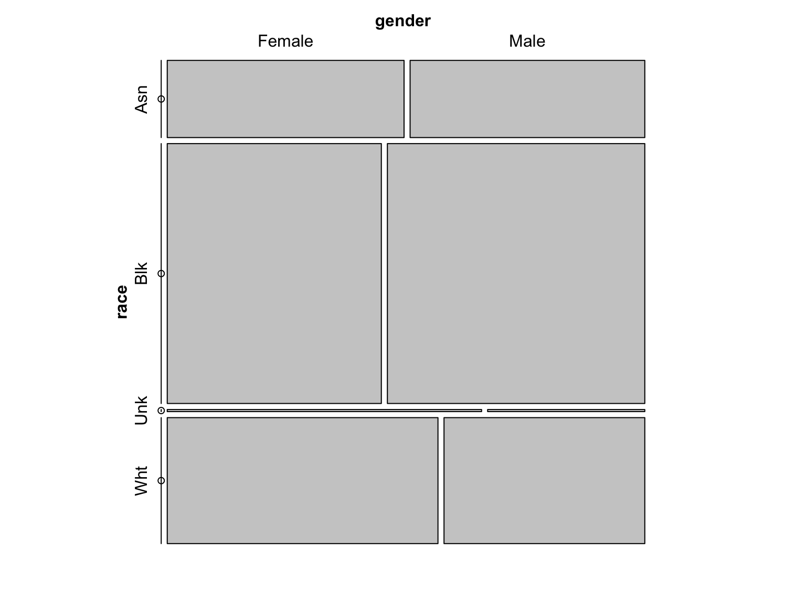

How to share personal data ethically
Rick Gilmore
2019-12-18 12:16:58
Preliminaries


Overview
- Data scientists need data
- Data about people requires protection
- Databrary.org
- How Databrary shares identifiable data
Data scientists need data

Data about people requires protection
Risks
- Breaches of privacy
- Breaches of confidentiality
- How are data collected?
- How are data stored and shared?
Video and audio data pose special risks
- Faces & voices
- Names, personal locations
- Behaviors
Video data have unique research potential
- Spatially & temporally dense samples of behavior
- “Outputs” of biological processes
- How procedures are actually done
- Computer-based task displays
How to protect against risk & realize potential?
Databrary.org
- World’s only data library specialized for storing and sharing video and audio
- Hosted at New York University
- Opened 2014
- 551 Institutions; 1,500+ researchers, 46K hours of video + other data
How Databrary protects personal data
Protecting personal data
- Data shared only with participant permission (& IRB approval)
- Template language, scripts
Open sharing (but with restricted audiences_
- Researchers require institutional authorization
- Formal access agreement
- Site-wide, not dataset-specific
- Data use and contribution
Virtues
- Restricted data sharing has long track-record
- Meaningful sharing permission; clarifies nature of risk
- Empowers participants
- Researchers & institutions determine what to share & when
- Open, but not public, sharing
- Researchers, Institutions need not reinvent wheels
- More discoverable than personal websites or institutional repositories
- More secure than public data and materials services or journal web pages
- Consistent curation makes reuse easier
- Works for data beyond video
- Secure data interaction via API
if (databraryapi::login_db(params$databrary_login)) {
vol_8_meta <- databraryapi::download_session_csv(vol_id = 8)
}## Login successful.
Tamis-LeMonda, C. (2013). Language, cognitive, and socio-emotional skills from 9 months until their transition to first grade in U.S. children from African-American, Dominican, Mexican, and Chinese backgrounds. Databrary. Retrieved December 18, 2019 from http://doi.org/10.17910/B7CC74
Issues…
- Unaltered data about individual most valuable for future research uses
- Does de-identification offer sufficient protection?
- Shouldn’t most (all?) human data be shared via restricted means?
Help update the Databrary policy framework
https://docs.google.com/document/d/1HdqZucSDsHuaOWTBQ59Al_t96WpZhKSnr_jlTO6BIvM/edit?usp=sharing
rogilmore@psu.edu https://gilmore-lab.github.io https://gilmore-lab.github.io/2019-12-19-data-sci/
Stack
This talk was produced on 2019-12-18 in RStudio 1.2.5019 using R Markdown and the reveal.JS framework. The code and materials used to generate the slides may be found at https://github.com/gilmore-lab/2019-12-19-data-sci/. Information about the R Session that produced the code is as follows:
## R version 3.5.3 (2019-03-11)
## Platform: x86_64-apple-darwin15.6.0 (64-bit)
## Running under: macOS Mojave 10.14.6
##
## Matrix products: default
## BLAS: /System/Library/Frameworks/Accelerate.framework/Versions/A/Frameworks/vecLib.framework/Versions/A/libBLAS.dylib
## LAPACK: /Library/Frameworks/R.framework/Versions/3.5/Resources/lib/libRlapack.dylib
##
## locale:
## [1] en_US.UTF-8/en_US.UTF-8/en_US.UTF-8/C/en_US.UTF-8/en_US.UTF-8
##
## attached base packages:
## [1] stats graphics grDevices utils datasets methods base
##
## other attached packages:
## [1] forcats_0.4.0 stringr_1.4.0 dplyr_0.8.1 purrr_0.3.2
## [5] readr_1.3.1 tidyr_0.8.3 tibble_2.1.3 ggplot2_3.2.0
## [9] tidyverse_1.2.1
##
## loaded via a namespace (and not attached):
## [1] revealjs_0.9 zoo_1.8-6
## [3] tidyselect_0.2.5 xfun_0.8
## [5] haven_2.1.0 lattice_0.20-38
## [7] colorspace_1.4-1 generics_0.0.2
## [9] htmltools_0.3.6 yaml_2.2.0
## [11] rlang_0.4.0 pillar_1.4.1
## [13] withr_2.1.2 glue_1.3.1
## [15] modelr_0.1.4 readxl_1.3.1
## [17] munsell_0.5.0 gtable_0.3.0
## [19] cellranger_1.1.0 rvest_0.3.4
## [21] evaluate_0.14 knitr_1.23
## [23] lmtest_0.9-37 curl_3.3
## [25] vcd_1.4-4 broom_0.5.2
## [27] Rcpp_1.0.1 backports_1.1.4
## [29] scales_1.0.0 jsonlite_1.6
## [31] databraryapi_0.1.6.9001 hms_0.4.2
## [33] packrat_0.5.0 digest_0.6.19
## [35] stringi_1.4.3 keyring_1.1.0
## [37] grid_3.5.3 cli_1.1.0
## [39] tools_3.5.3 magrittr_1.5
## [41] lazyeval_0.2.2 crayon_1.3.4
## [43] pkgconfig_2.0.2 MASS_7.3-51.4
## [45] xml2_1.2.0 lubridate_1.7.4
## [47] assertthat_0.2.1 rmarkdown_1.13
## [49] httr_1.4.0 rstudioapi_0.10
## [51] R6_2.4.0 nlme_3.1-140
## [53] compiler_3.5.3